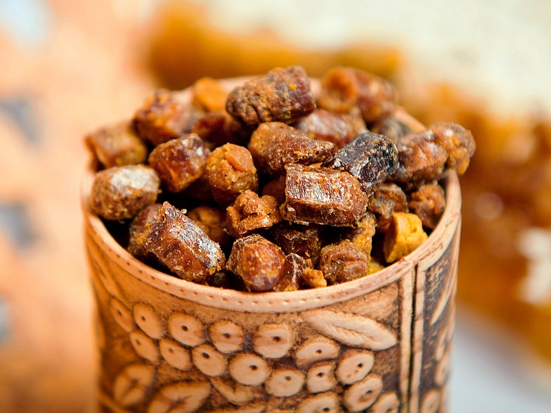
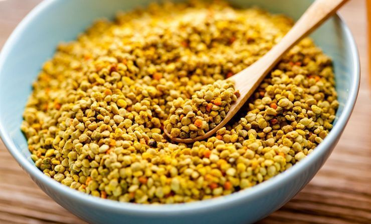

Самым первым в году медом, который пчелки-труженицы собирают весной с цветущих кустарников и деревьев, является майский мед. В нем присутствует удивительный ароматный букет из земляники, смородины, шалфея, вишни, яблони, черемухи, ивы, кислицы, клена, а также некоторых других ценных растений, который цветут в мае.
Окраска майского меда, как правило, варьируется от золотисто-солнечной до коричневатой - это полностью зависит от того, с каких именно растений пчелки собрали сладкий нектар. Следует отметить, что именно майский мед является наиболее популярным и востребованным.
Весной в пчелиных ульях появляются тысячи малышек, которым просто необходимы пыльца и нектар для того, чтобы расти и хорошо развиваться. В связи с этим все собранное на протяжении сладкое лакомство достается им, а к процессу откачки меда трудолюбивые пчелы приступают уже в начале следующего месяца.
Примечательно, что после откачки майский мед не имеет абсолютно никаких особых свойств. Его окраска - бледная, со слегка заметным зеленоватых оттенком. Период полного созревания майского меда продолжается приблизительно три-пять месяцев. По истечению этого времени мед полностью преображается - становится очень красивым, сладким и ароматным, с прохладными ментоловыми нотками.
Майский мед чрезвычайно полезен для человеческого организма. По сравнению со многими другими сортами меда он гораздо легче усваивается - это обусловлено высоким содержанием натуральной фруктозы. Основная польза фруктозы заключается в том, что она способна защитить от возникновения и развития сахарного диабета. Кроме того, она способствует нормализации процессов кроветворения, которые происходит в организме человека.
При частом употреблении майского меда человек становится бодрым и жизнерадостным, у него значительно улучшается настроение. Кроме того, майский мед помогает эффективно справляться с бессонницей и проблемами нервной системы. Также его рекомендуют употреблять при различных заболеваниях органов зрения и атеросклерозе.
Следует отметить, что положительное влияние майского меда на человеческий организм напрямую связано с тем, какие целебные растения в нем преобладают. Таким образом, майский мед, полученный на основе нектара акации, идеально подходит для детского лечебного питания. А мед, собранный с цветков боярышника, оказывает благотворное воздействие на щитовидную железу и сердечно-сосудистую систему.
Мед разнотравье, помимо чрезвычайно высокой питательности, наряду с противопоказаниями имеет целый ряд ценных для нашего здоровья свойств. Влияние, которое он оказывает на организм, выражается в противомикробном и антибактериальном действии. Кроме того, имеет место противовоспалительный и болеутоляющий эффект.
Мед разнотравье принято применять при болезнях печени и кишечника. Эффективен такой мед как общеукрепляющее средство и, конечно же, в борьбе с простудными заболеваниями. Хорош луговой мед в качестве успокоительного средства, в результате чего может с пользой применяться при нервных расстройствах.
Благодаря своему целебному составу, мед из разнотравья помогает регулировать процесс работы сердечно-сосудистой и пищеварительной систем. Из-за антибактерицидных свойств его применение возможно даже при лечении кожных заболеваний.
Монофлорные сорта меда называются в зависимости от источника. В названии полифлорных медов отражается время и место сбора. Выделяют несколько основных разновидностей:
• луговое разнотравье - мед, полезные свойства которого считаются наиболее высокими. Среди источников такие целебные растения, как чабрец, шалфей, одуванчик, клевер, ромашка;
• горное разнотравье собирается в экологически чистых районах. Источниками могут быть распространенные медоносы: акация белая, боярышник, терновник. Значительная часть пыльцы собирается с растений, которые встречаются исключительно в горах: букашник горный, душица обыкновенная, бирючина и так далее;
• лесное разнотравье. Источником являются лесные растения: деревья, кустарники, цветы. Особенно ценен, когда имеет примесь пыльцы лесной земляники. По этой причине в лес пасеки вывозят чаще всего во время ее цветения;
• степной мед пользуется популярностью как один из самых полезных. Он собирается с диких цветов: сурепки, василька, донника, зверобоя, чертополоха. Источником становятся и промышленные культуры, такие, как рапс или гречиха
Еще одно важное использование такого меда – в качестве действенного мочегонного, снижающего вероятность образования отеков. Мёд с подсолнечника укрепляет стенки сосудов, улучшает функционирование печени, он рекомендуется больным с атеросклерозом, желудочно-кишечными коликами, остеохондрозом и для общего оздоровления. Существуют исследования, доказывающие эффективность этого мёда в борьбе с артритом и онкологическими заболеваниями на их начальных стадиях.
Интересно, что популярность подсолнечникового меда стабильно увеличивается за рубежом: в частности, столь заботящиеся о подрастающем поколении страны, как Япония, Южная Корея и Китай, сделали его обязательной частью питания в детских учреждениях. Целительные свойства мёда с подсолнуха многообразны, так что этим уникальным продуктом не стоит пренебрегать – он способен подарить здоровье и долголетие!
В чем польза подсолнечного мёда?
1. Целью недавнего исследования, произведенного нью-йоркскими учеными, было сравнение нескольких разновидностей меда. Оказалось, что подсолнечного меда содержит самый богатый ассортимент полезных аминокислот, которые так нужны нашему организму для синтеза белков.
2. Подсолнечный мед насыщен антиоксидантами, про целебные качества которых можно говорить бесконечно. Антиоксиданты можно найти и во многих других продуктах. Но в подсолнечном меде этих активных веществ действительно много.
3. Натуральные ферменты поднимают подсолнечный мед еще на один уровень вверх по шкале «полезности». Причем некоторые из них уникальны и не встречаются в других натуральных продуктах.
4. В народной медицине этот мед традиционно используется для лечения болезней сердца, борьбы с диареей, бронхитом, малярией, улучшения функций кишечника, снятия пищеварительных колик. Его можно использовать как тонизирующее и мочегонное средство.
5. Подсолнечный мед будет полезен и тем, кто страдает от атеросклероза, остеопороза, а также невралгии, особенно простудного характера.
6. Не забудем про антибактериальные свойства подсолнечного меда. Он столь же эффективен в борьбе с простудой или гриппом, как, например, липовый или луговой.

Состав и лечебные свойства прополиса
Пчелиный клей содержит много дезинфицирующих веществ, благодаря которым в ульях насекомых поддерживается естественная чистота и даже стерильность. Мощные бактерицидные свойства прополиса издавна подмечены людьми. Только этот продукт пчеловодства, и больше никакой другой, способен быстро уничтожать миллиардные полчища вредных микроорганизмов.
Природное обезболивающее
С древности прополис славится как анестетик местного действия. Уже в современности были обнаружены в нем вещества, по силе обезболивания превосходящие новокаин – почти в 5 раз, а марихуану (коноплю) – в 3,5 раза. Обезболивающее свойство прополиса происходит на ферментном уровне, также пчелиный продукт снижает повышенную температуру.
Прополис — антибактериальное и противовирусное средство
Мощное антисептическое действие прополиса защищает организм от патогенных бактерий и вирусов. Интересно, что в отличие от синтетических антибиотиков, к прополису у бактерий не вырабатывается устойчивость. Стоит ли говорить, насколько это полезно в терапии инфекционных заболеваний? Кроме того, лечебные свойства прополиса включают активизацию выработки иммунных клеток.
Ускоряет заживление ран, снимает воспаление
Поскольку прополис способствует быстрой регенерации, препараты из него с успехом используются при лечении трофических язв, долго незаживающих ран, экзем, дерматозов. Ускоряется эпителизация слизистых под воздействием лечебных веществ прополиса, воспаление тканей сменяется восстановлением.
Кому полезно принимать прополис
Целебный пчелиный дар помогает сражаться с самыми тяжелыми недугами. Он быстро восстанавливает силы, обеспечивает нормальное питание клеток, полезен при анемии, обладает также радиозащитным свойством. В противораковой терапии прополис употребляют после химио- и лучевой терапии – он помогает легче перенести реабилитацию. Эффективно лечение прополисом язвы желудка и 12-перстной кишки в период ремиссии. Существует множество рецептов с пчелиным клеем.

Пыльца пчелиная полезные свойства которой известны не многим людям, может избавить вас от разных недугов.
Пыльца пчелиная является уникальным по своей природе продуктом, который несет человеческому организму огромную пользу. Возможно, вы еще не все знаете о том, что такое пыльца и чем она так ценна. Многие люди, не владея информацией об этом удивительном продукте, приобретают в аптеках синтетические витамины, стремясь с их помощью укрепить иммунитет и насытить организм необходимыми веществами.
Часто мы обращаемся именно к фармакологии вместо того, чтобы прислушаться к природе и пользоваться ее благами. А ведь искусственные препараты никогда не смогут дать столько пользы организму, как природные, а напротив, порой они несут только вред. И чтобы не искушать судьбу и не подвергать свое здоровье срыву, стоит прибегнуть к натуральным продуктам для лечения и профилактики. Ведь именно для этого они и созданы самой природой. Из этой статьи вы узнаете, чем полезна пыльца пчелиная, и как ее нужно принимать.
Пыльца представляет собой миниатюрные зерна, которые покрыты оболочкой. Она отличается по размеру, цвету и форме в зависимости от вида растения.
Пчелиная пыльца-обножка является плодом труда труженицы пчелы. Цветы опыляет множество насекомых, в число которых входят и пчелы. Они несут на своем волосистом теле зерна пыльцы. Собранный порошок пчелы обрабатывают секретом челюстных желез, увлажняют его нектаром и формируют в корзиночки, которые представляют собой липкие комочки, расположенные в районе ножек.
Кстати, название «обножка» произошло от расположения пыльцы вокруг ног насекомого. Далее пчела отправляется в улей, чтобы оставить свою добычу. Она складывает собранную пыльцу в ячейки, пробираясь через пыльцеотбирающую решетку, и теряя на том месте свою добычу. После чего пчела летит снова на поиски пыльцы. Таким образом, пыльца попадает в лоток сквозь решетку.
Удивительно, пчела настолько трудолюбива, что за один день она совершает 50 вылетов. При этом посещает 600 цветков, собирая с них пыльцу. Чтобы собрать 1 кг пыльцы, одной пчеле необходимо вылететь 50 тысяч раз.
Пыльца пчелиная: химический состав
По поводу состава этого продукта можно говорить долго. Настолько пыльца полезна и важна для здоровья человека. Она имеет множество необходимых веществ, которые помогают организму укрепляться и восстанавливаться.
Витамин А (ретинол) – необходим для зрения, для развития костной ткани, плаценты. Когда в организме не хватает этого витамина, человек чувствует шелушение кожи, сухость во рту и на коже. Также наблюдается потускнение и сухость волос, сухой кашель, заболевания желудочно-кишечного тракта. Дефицит витамина А влечет к ухудшению зрения, особенно в сумерках.
Витамин В1 (тиамин) – играет важную роль в множестве процессов, которые связаны с биосинтезом нуклеиновых кислот, липидов и белков. Тиамин необходим для нормальной работы сердечнососудистой системы, для желудочно-кишечного тракта, уравновешивает кислотность желудочного сока, участвует в пищеварительном процессе, регулирует аппетит. Этот витамин также важен для деятельности эндокринной системы. Влияет на центральную нервную систему.